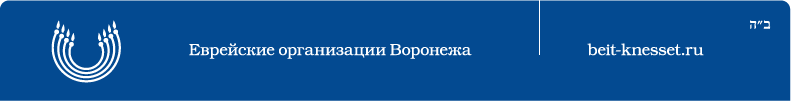

|  |
|
ИЗ ИСТОРИИ ВОРОНЕЖСКОЙ СИНАГОГИ Синагога расположена в жилом квартале между улицами Кирова, Куцыгина, Свободы и Станкевича. Окружена застройкой 1950-1970-х гг., главный фасад визуально открыт со стороны улицы Станкевича. Сооружена на средства иудейской общины города. Еврейская община в Воронеже сложилась во второй половине XIX в., с 1860-х гг. она имела молитвенный дом. Разрешение на строительство синагоги было получено общиной в 1901 г. благодаря инициативе раввина С.А. Айзенштейна (?-1918). В том же году на имя И.Я. Берлина, Л.В. Сирвинта и И.М. Цивьяна был приобретен земельный участок на краю Большой Дворянской улицы у наследников Гурова. Проект синагоги выполнил архитектор С.Л. Мысловский, строительные работы вел подрядчик Аверин. Первое богослужение состоялось в сентябре 1903 г. Делами синагоги руководило правление, которое в это время возглавлял кандидат права Л.В. Сирвинт, в его состав одно время входил владелец аптеки И.У. Габрилович – отец сценариста и драматурга Е.И. Габриловича (1899-1993). В 1909 г. при синагоге было организовано благотворительное общество. В декабре 1918 г. община была вынуждена представить в Воронежский губсовнархоз перечень находившихся в синагоге предметов из благородных металлов (почти все они оказались серебряными). В 1933 г. секретариат облисполкома принял решение о закрытии синагоги и предоставлении верующим молитвенного здания меньших размеров. Синагога была закрыта лишь осенью 1939 г., а ее здание передано базе облтекстиля и переоборудовано под склады. Во время войны в синагогу попала авиабомба. Интерьеры полуразрушенного здания были сожжены фашистами, в результате сохранились только наружные стены. Но уже к осени 1944 г. нижний этаж был восстановлен для тех же складов. Здание синагоги является уникальным для Воронежской области памятником иудейской культовой архитектуры начала XX в. В ее облике прослеживаются влияния средневекового восточного зодчества. Синагога представляет собой кирпичное двухсветное (сейчас – двухэтажное) здание, прямоугольное в плане, вытянутое с северо-востока на юго-запад. Главный западный торцовый фасад фланкируют две восьмигранные башни, повышенные глухими аттиковыми ярусами, между которыми размещен треугольный фронтон. Средняя часть противоположного трехчастного восточного фасада также повышена аттиковой надстройкой с фронтоном, идентичным западному. Эти подвышения оформляли торцы среднего нефа синагоги. Протяженные фасады, в 6 световых осей, расчленены на всю высоту простеночными лопатками. Над венчающим профилированным карнизом им соответствуют кирпичные фигурные столбики, завершенные символическими гранатовыми яблоками. Лопатки и грани башен декорированы частыми поясами из валиков, образующими подобие ленточного руста. Между лопатками проходит карниз, разделяющий первый ярус с прямоугольными окнами и высокий второй ярус с большими стрельчатыми окнами. Арочные окна заключены в мелкопрофилированные наличники и прямоугольные рамки, верхние части которых заполнены лепным растительным орнаментом (сохранился на восточном фасаде). Под окнами размещены филенки с орнаментальными переплетениями. Центр второго яруса восточного фасада занимает огромное окно со стрельчатой пологой перемычкой, обрамленное массивными валиками. Аналогичный валиковый бордюр на западном фасаде объединяет в одну композицию три арочных входных проема и три высоких арочных окна второго яруса. Центрические композиции западного и восточного фасадов подчеркнуты размещенными в тимпанах фронтонов накладными элементами в виде картушей (в восточном сохранился текст) в киотах. Поле тимпанов было декорировано растительным лепным орнаментом. Фрагментарно сохранились лепные геометрические ленточные сплетения на аттиках и фризах восточного фасада здания. Первоначальная планировка и отделка интерьеров здания полностью утрачены. В начале 1997 г. здание синагоги передано еврейским религиозным и благотворительным организациям. ГАВО, ф. 16, оп. 1, д. 54, л. 368; ф. 51, оп. 1, д. 591, л. 107-108; ф. 1439, оп. 10, д. 6, л. 64; Акиньшин А. Иудейская синагога // Утро (Воронеж). 1993. 27 фев.; Отчет по сооружению Еврейского молитвенного дома в г. Воронеже. Воронеж, 1905. С. 3-6; Акиныиин А. За "чертой оседлости": Еврейская община в Воронеже XIX-XX в. // Воронежский курьер. 2000. 25, 28, 30 марта, 1, 4 апр. А.Н. Акиньшин, Л.В. Кригер (См.: Историко-культурное наследие Воронежа. Материалы свода памятников истории и культуры Российской Федерации. — Воронеж: Центр духовного возрождения Черноземного края, 2000. — С. 122-124.) |
Страница обновлена: 27.11.2006. |